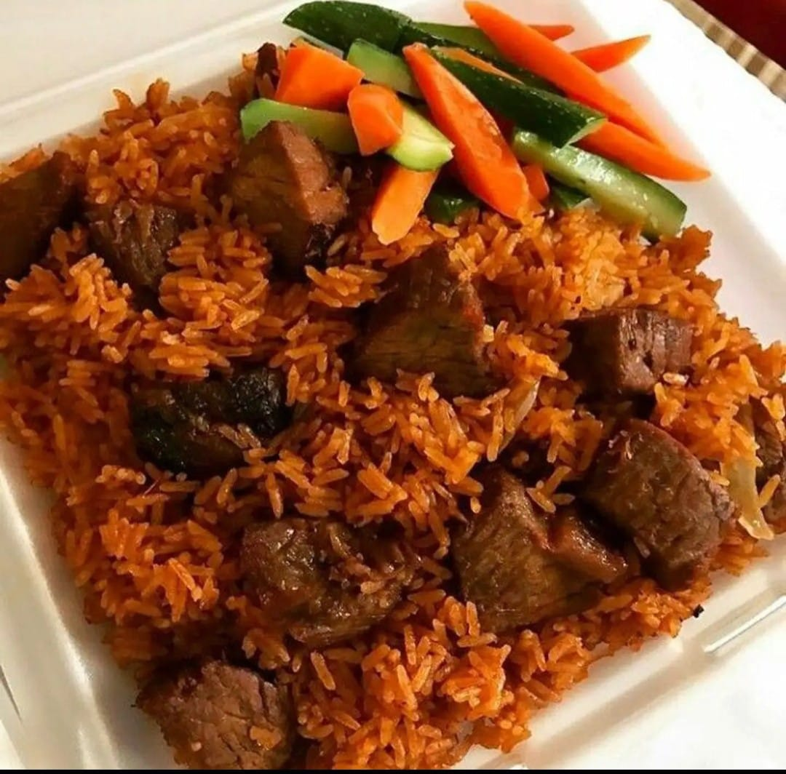

🍛 Pilau Recipe - Jays Kitchen

Ingredients
- 1kg Meat
- 2 cups Pishori rice
- 2 medium onions, chopped and cubed
- 1 tsp garlic paste
- 1 tsp ginger paste
- 1 tsp garam masala
- 4 medium potatoes, peeled
- 1 tsp black pepper
- Cooking oil
- Salt to taste
Steps
- Begin by boiling your meat until tender, then soak your rice in warm water for 10 minutes.
- Heat cooking oil in a sufuria and add in your onions. Fry until golden brown.
- Add the crushed garlic, ginger, and garam masala. Cook for 2 minutes.
- Add a bit of water, then add in the potato pieces.
- Add the boiled meat and allow it to simmer.
- Add in the soaked rice, salt to taste, and 3 cups of water.
- Lower the heat, cover, and let it cook until done.